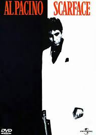

FILME EU GOSTUMMMM
O poderoso Chefão

Uma família mafiosa luta para estabelecer sua supremacia nos Estados Unidos depois da Segunda Guerra Mundial. Uma tentativa de assassinato deixa o chefão Vito Corleone incapacitado e força os filhos Michael e Sonny a assumir os negócios.
Scarface
Após receber residência permanente nos Estados Unidos em troca do assassinato de um oficial do governo cubano, Tony Montana se torna o chefe do tráfico de drogas em Miami. Matando qualquer um que entre em seu caminho, Tony eventualmente se torna o maior traficante da Flórida, controlando quase toda a cocaína que entra em Miami. Porém, a pressão da polícia, as guerras com cartéis colombianos e sua própria paranoia servem para alimentar as chamas de sua eventual queda.